Actualizado el 14 de noviembre de 2026. Referencias renderizadas desde el código y archivos originales; no son ilustraciones nuevas.
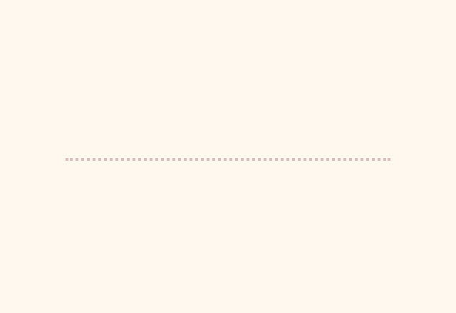
DEC-004 · Perforación de eventos y promociones
Identidad visual y decoraciones · Activo2 px dotted; ancho del contenedor; margen superior 16 y padding 12 px
Tratar como motivo de perforación, no redibujar textos ni controles.src/App.css#.event-card .event-actions, .promotion-card footer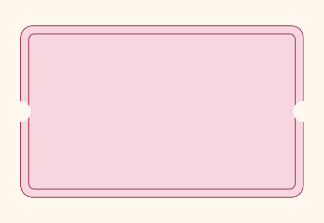
DEC-005 · Cartel de Inicio con muescas
Identidad visual y decoraciones · ActivoFluido; máscara lateral radio10 px; marco doble separado 7 px; radio12/6 px
Es un marco compuesto, no otra ilustración. La carpa corresponde a ILU-001.src/App.css#.home-pos-poster, .event-poster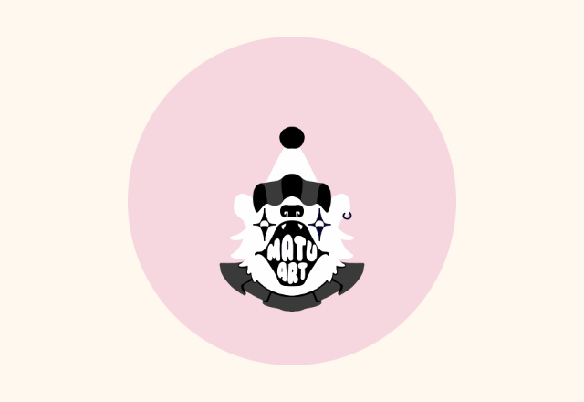
MAR-001 · Logo oficial MATU ART
Identidad visual y decoraciones · ActivoArchivo: 4000 × 4000 px. CSS: encabezado 52 × 52; lateral 150 × 150.
Conservar original. Miniatura muestra presentación circular; incluye márgenes transparentes. Consultar antes de redibujar identidad oficial.src/assets/branding/matu-art-official.png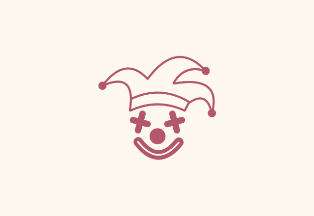
MAR-002 · Payaso de marca
Identidad visual y decoraciones · ActivoArchivo: 1414 × 2000 px; ventana CSS cuadrada: 20, 26, 30, 40 o 54 px.
Un maestro para rosette y starburst: ambas variantes usan el mismo PNG. Límites alfa documentados (245,633)–(1106,1394); conservar original y proporción.src/assets/branding/clown-icon.png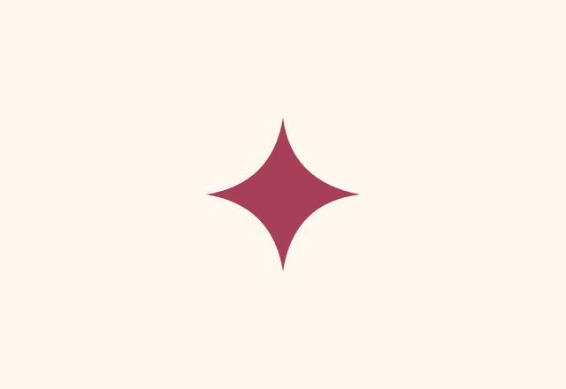
ORN-001 · Estrella curva de cuatro puntas
Identidad visual y decoraciones · Activo12 px talón; 15 px selector; 16 px modal
Separador y guirnalda son composiciones maestras. Mantener proporción, aire y legibilidad.src/components/Ornament.tsx#star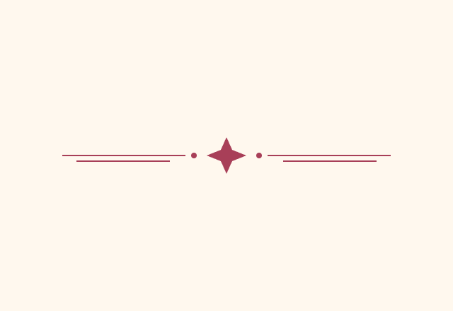
ORN-002 · Separador con estrella y puntos
Identidad visual y decoraciones · ActivoEscritorio: 150 × 23 px de caja CSS
Separador y guirnalda son composiciones maestras. Mantener proporción, aire y legibilidad.src/components/Ornament.tsx#dividerORN-003 · Carpa ornamental del artista
Identidad visual y decoraciones · ActivoSVG 1080 × 1080. CSS lateral: 128 × 128 px; max-width 100%.
Integrado. Sustituye guirnalda horizontal; comparte archivo con ILU-001 temporal. No recortar ni deformar.src/assets/illustrations/circus-tent-artist.svg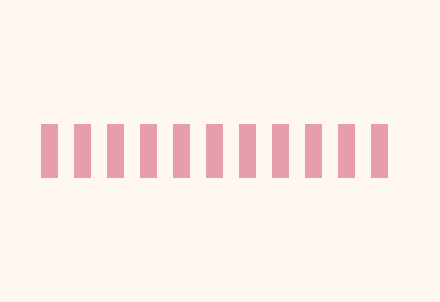
DEC-001 · Rayas de carpa
Navegación · ActivoMódulo 24 px (12 rosa + 12 crema); lateral 4 px móvil / 10 escritorio; carrito 7 px
Muestra ampliada para ver patrón. Reglas desk-event/editorial-panel son heredadas u ocultas y no cuentan como uso actual.src/styles/themes.css#--stripe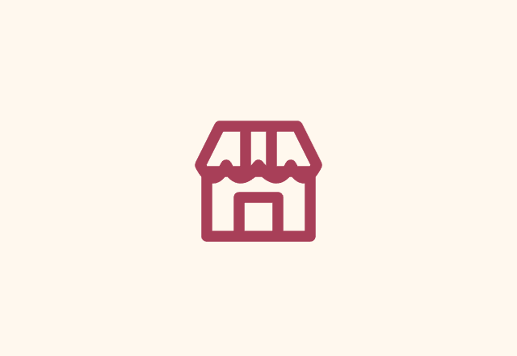
ICO-001 · Tienda / Inicio
Navegación · Activo20 px
Nombre exacto interno: home. No se identificó biblioteca de procedencia. Trazo 1,7; extremos redondos. SVG transparente, legible a 15–32 px.src/components/Icon.tsx#paths.homeICO-002 · Bolsa de venta
Navegación · Activo19 y 20 px
Nombre exacto interno: bag. No se identificó biblioteca de procedencia. Trazo 1,7; extremos redondos. SVG transparente, legible a 15–32 px.src/components/Icon.tsx#paths.bag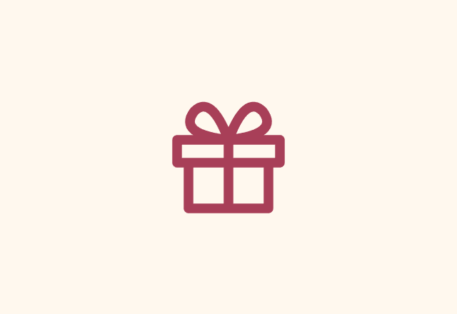
ICO-003 · Caja de inventario
Navegación · Activo20 px
Nombre exacto interno: box. No se identificó biblioteca de procedencia. Trazo 1,7; extremos redondos. SVG transparente, legible a 15–32 px.src/components/Icon.tsx#paths.box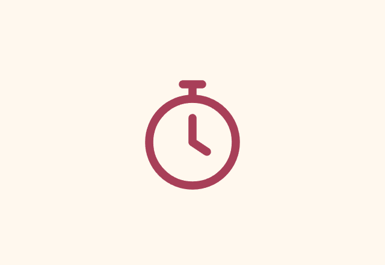
ICO-004 · Cronómetro / Historial
Navegación · Activo20 px
Nombre exacto interno: clock. No se identificó biblioteca de procedencia. Trazo 1,7; extremos redondos. SVG transparente, legible a 15–32 px.src/components/Icon.tsx#paths.clock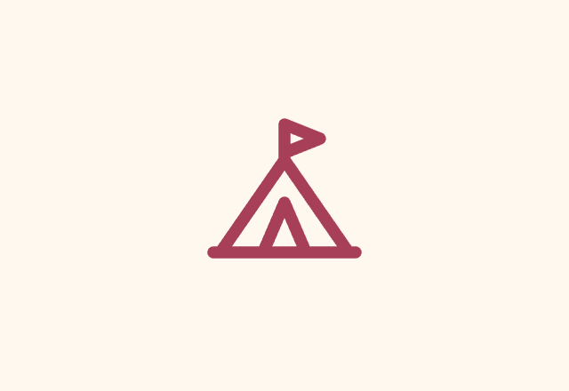
ICO-005 · Carpa / Eventos
Navegación · Activo20 px
Nombre exacto interno: tent. No se identificó biblioteca de procedencia. Trazo 1,7; extremos redondos. SVG transparente, legible a 15–32 px.src/components/Icon.tsx#paths.tentCTL-001 · Cerrar o quitar etiqueta
Acciones y controles · Activo24 px cierre del selector; 12 px en etiquetas. Glifo, no caja SVG.
No es icono de biblioteca. Solo encargar equivalente si se quiere sustituir el control por SVG.src/components/catalog/ClassificationSelect.tsx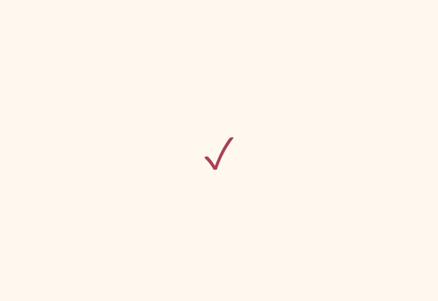
CTL-002 · Opción seleccionada
Acciones y controles · Activo18 px
No es icono de biblioteca. Solo encargar equivalente si se quiere sustituir el control por SVG.src/components/catalog/ClassificationSelect.tsx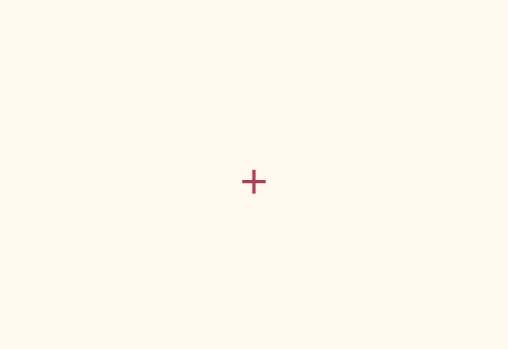
CTL-003 · Crear clasificación / entidad
Acciones y controles · Activo11 px text-button; 12 px botón Crear nuevo; 11 px detalle diario
No es icono de biblioteca. Solo encargar equivalente si se quiere sustituir el control por SVG. Incluye el signo + del detalle diario cerrado; no operadores matemáticos del código.src/components/catalog/ClassificationSelect.tsx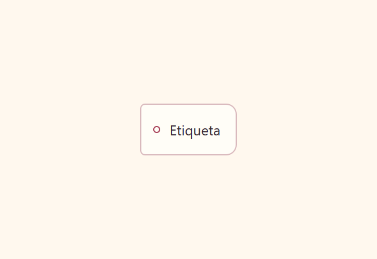
DEC-006 · Ojal de etiqueta
Acciones y controles · Activo4 × 4 px de caja, borde1; con box-sizing:border-box
Elemento CSS mínimo, baja prioridad; no reemplazar todo el control.src/App.css#.filter-chip::before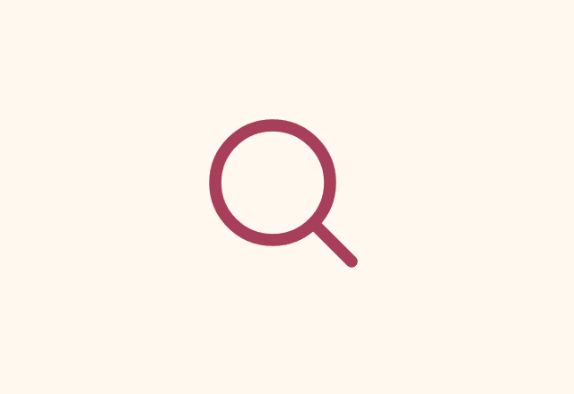
ICO-006 · Lupa
Acciones y controles · Activo20 px
Nombre exacto interno: search. No se identificó biblioteca de procedencia. Trazo 1,7; extremos redondos. SVG transparente, legible a 15–32 px.src/components/Icon.tsx#paths.search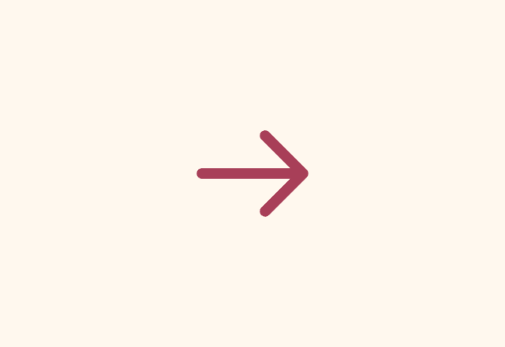
ICO-007 · Flecha a la derecha
Acciones y controles · Activo14, 16, 17, 18 px
Nombre exacto interno: arrow. No se identificó biblioteca de procedencia. Trazo 1,7; extremos redondos. SVG transparente, legible a 15–32 px.src/components/Icon.tsx#paths.arrow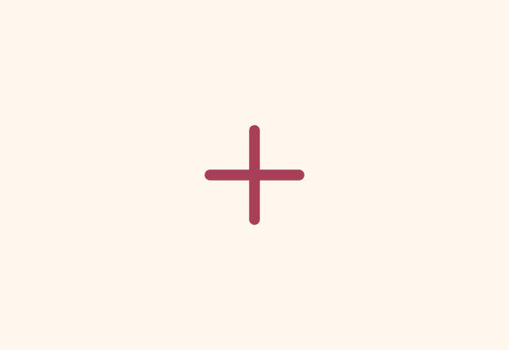
ICO-009 · Más
Acciones y controles · Activo15 px cantidad; 18 px agregar
Nombre exacto interno: plus. No se identificó biblioteca de procedencia. Trazo 1,7; extremos redondos. SVG transparente, legible a 15–32 px.src/components/Icon.tsx#paths.plus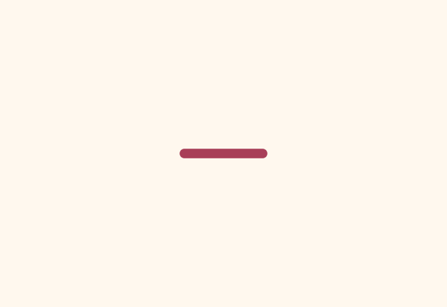
ICO-010 · Menos
Acciones y controles · Activo15 px
Nombre exacto interno: minus. No se identificó biblioteca de procedencia. Trazo 1,7; extremos redondos. SVG transparente, legible a 15–32 px.src/components/Icon.tsx#paths.minus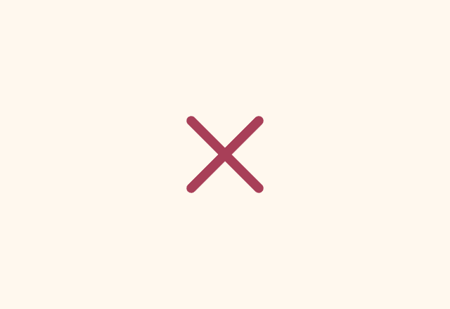
ICO-011 · Cerrar en cruz
Acciones y controles · Activo16 px carrito; 20 px modal
Nombre exacto interno: close. No se identificó biblioteca de procedencia. Trazo 1,7; extremos redondos. SVG transparente, legible a 15–32 px.src/components/Icon.tsx#paths.close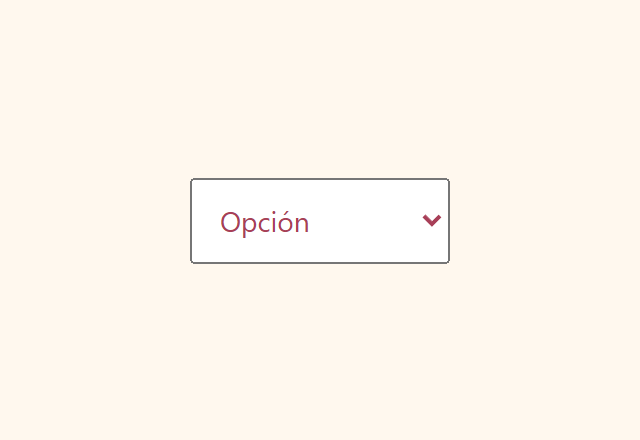
NAT-001 · Indicador de desplegable
Acciones y controles · ActivoNo fijo; determinado por navegador, SO, zoom y fuente
Referencia renderizada en Edge de escritorio. No prometer correspondencia visual con Android; no necesita redibujo de marca.HTML nativo; ubicaciones en Usos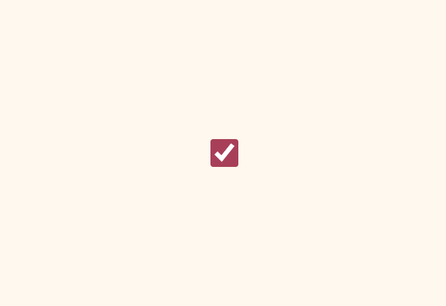
NAT-002 · Casilla de selección
Acciones y controles · Activo19 × 19 px .check-label; 20 × 20 px .pending-select; otros nativos según navegador
Referencia renderizada en Edge de escritorio. No prometer correspondencia visual con Android; no necesita redibujo de marca. Acento cereza configurado en estas dos clases; otros contextos pueden usar el color nativo.HTML nativo; ubicaciones en Usos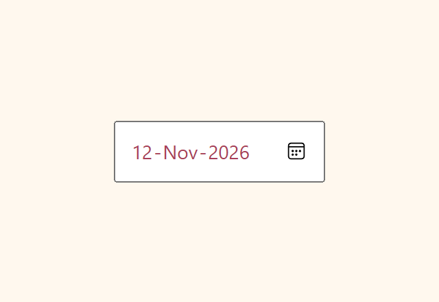
NAT-003 · Calendario del campo fecha
Acciones y controles · ActivoNo fijo; determinado por navegador, SO, zoom y fuente
Referencia renderizada en Edge de escritorio. No prometer correspondencia visual con Android; no necesita redibujo de marca.HTML nativo; ubicaciones en Usos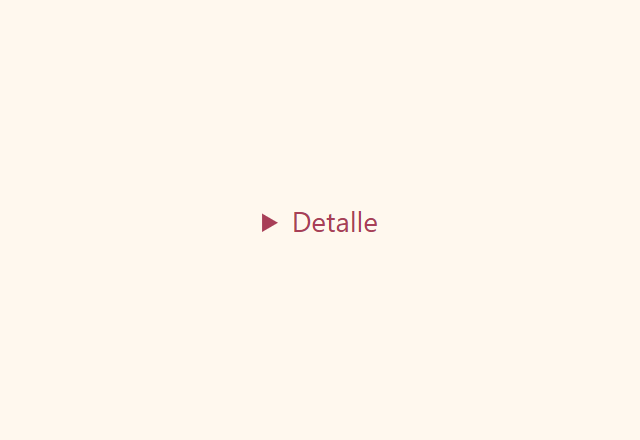
NAT-004 · Indicador de detalle desplegable
Acciones y controles · ActivoNo fijo; determinado por navegador, SO, zoom y fuente
Referencia renderizada en Edge de escritorio. No prometer correspondencia visual con Android; no necesita redibujo de marca.HTML nativo; ubicaciones en Usos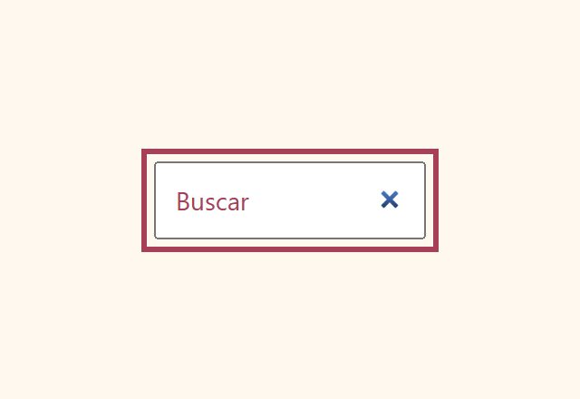
NAT-005 · Limpiar búsqueda
Acciones y controles · ActivoNo fijo; determinado por navegador, SO, zoom y fuente
Referencia renderizada en Edge de escritorio. No prometer correspondencia visual con Android; no necesita redibujo de marca. Icono de limpiar visible con foco y valor; referencia capturada en ese estado.HTML nativo; ubicaciones en Usos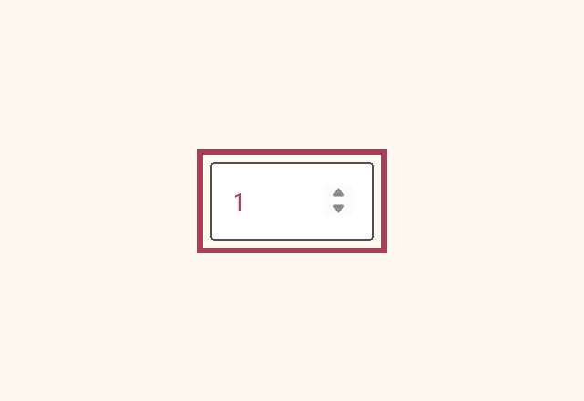
NAT-006 · Control numérico
Acciones y controles · ActivoNo fijo; determinado por navegador, SO, zoom y fuente
Referencia renderizada en Edge de escritorio. No prometer correspondencia visual con Android; no necesita redibujo de marca. Flechas visibles con hover/foco en Edge; Android puede omitirlas.HTML nativo; ubicaciones en Usos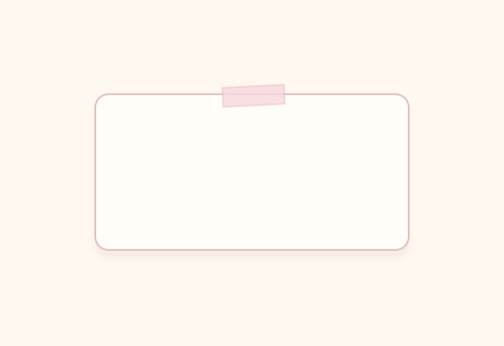
DEC-002 · Cinta adhesiva de tarjeta
Productos e inventario · Activo38 × 11 px; giro −3°; left:calc(50% - 19px), top:-6px
Rectángulo semitransparente de papelería. No confundir con borde simple.src/App.css#.product-card::before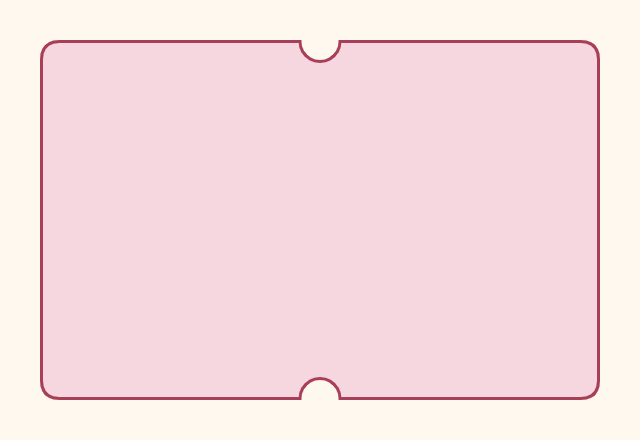
TIC-003 · Entrada: Eventos
Eventos · ActivoFluido, medido por ResizeObserver; radio muesca 10 px, esquinas9, trazo1,5 px
Mantener continuidad del trazo y espacio para contenido. No convertir el marco adaptable en una imagen de tamaño fijo.src/components/TicketFrame.tsx; src/services/ticketGeometry.ts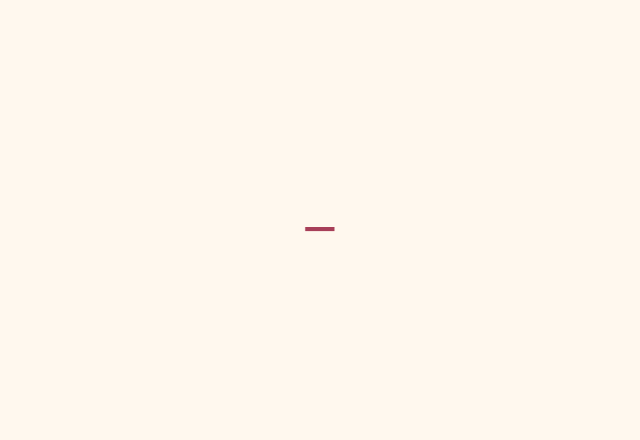
CTL-004 · Contraer detalle diario (menos)
Historial y estadísticas · Activo11 px, tamaño de texto CSS
El + cerrado comparte CTL-003. No es una nueva ilustración.src/styles/analytics.css#.analytics-day[open] summary::after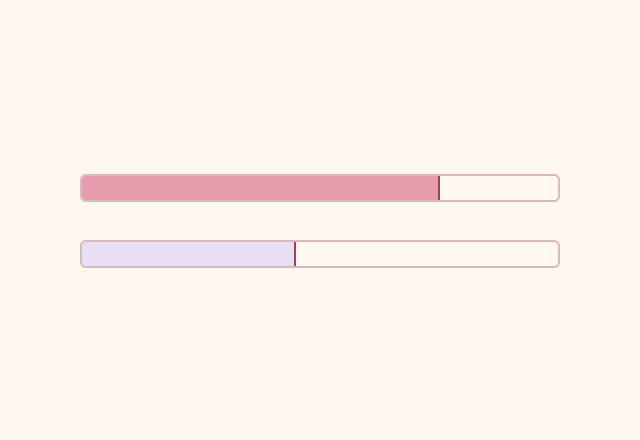
DAT-001 · Barras estadísticas positivas y negativas
Historial y estadísticas · ActivoPista14 px alto; ancho fluido; barra porcentual calculada
Muestra de geometría con proporciones de referencia; no representa ventas reales. No sustituir por imagen estática.src/components/analytics/Statistics.tsx#BarChart; src/styles/analytics.css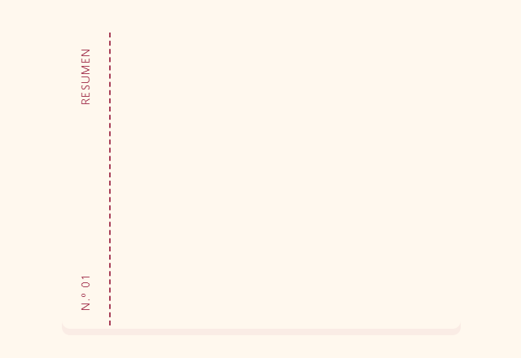
DEC-003 · Talón perforado de resultados
Historial y estadísticas · ActivoAncho 32 px (30 móvil ≤450); borde punteado 1 px; altura adaptable
Referencia de composición de talón. Letras son texto funcional y la estrella tiene maestro ORN-001.src/App.css#.ticket-stub; src/styles/tickets.cssTIC-001 · Entrada: Resultados
Historial y estadísticas · ActivoFluido, medido por ResizeObserver; radio muesca 8 px, esquinas9, trazo1,5 px
Mantener continuidad del trazo y espacio para contenido. No convertir el marco adaptable en una imagen de tamaño fijo.src/components/TicketFrame.tsx; src/services/ticketGeometry.tsTIC-002 · Entrada: Promociones y tarjetas analíticas
Historial y estadísticas · ActivoFluido, medido por ResizeObserver; radio muesca 10 px, esquinas9, trazo1,5 px
Mantener continuidad del trazo y espacio para contenido. No convertir el marco adaptable en una imagen de tamaño fijo.src/components/TicketFrame.tsx; src/services/ticketGeometry.ts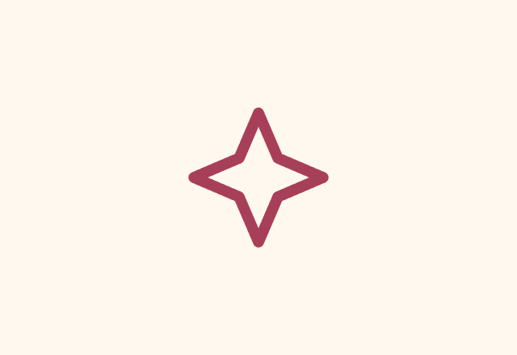
ICO-008 · Destello angular
Estados y mensajes · Activo20 px navegación; 32 px vacío
Nombre exacto interno: sparkle. No se identificó biblioteca de procedencia. Trazo 1,7; extremos redondos. SVG transparente, legible a 15–32 px.src/components/Icon.tsx#paths.sparkle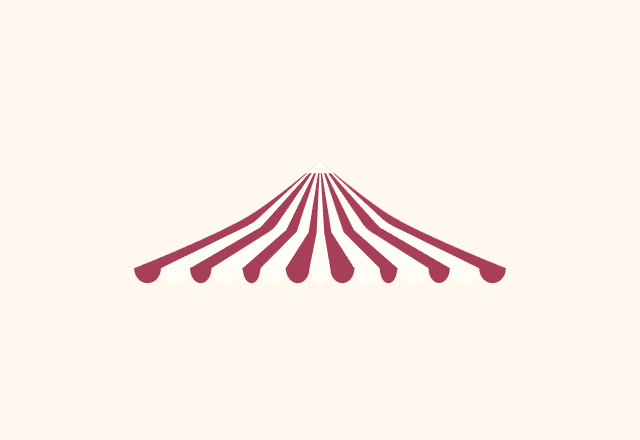
ILU-001 · Carpa del artista · uso temporal
Ilustraciones grandes · ActivoSVG 1080 × 1080. Inicio móvil hasta 120 × 120 px (limitado por columna; 100 px en muestra); escritorio hasta 330/360 px. Eventos tarjetas hasta 190 × 190 px.
ILU-001 temporal. Misma fuente que ORN-003, sin duplicar archivo de aplicación. Pendiente de ilustración definitiva.src/assets/illustrations/circus-tent-artist.svg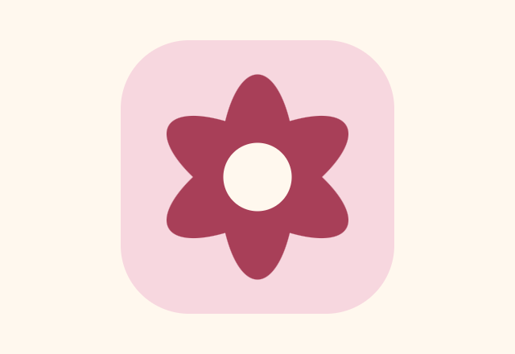
ANT-F01 · clown-ufo.svg
No utilizado · No utilizadowidth="64"; height="64"
No utilizado. React/Vite son marcas reconocibles, pero no se verificó autoría/licencia del archivo.public/clown-ufo.svgANT-F02 · favicon.svg
No utilizado · No utilizadowidth="48"; height="46"; width="48"; height="46"
favicon.svg e icons.svg se precargan en service worker, pero no se muestran como favicon ni iconos activos.public/favicon.svg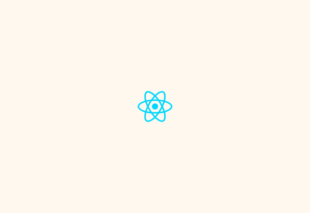
ANT-F03 · react.svg
No utilizado · No utilizadowidth="35.93"; height="32"
No utilizado. React/Vite son marcas reconocibles, pero no se verificó autoría/licencia del archivo. El SVG declara class="iconify iconify--logos"; marca React. No hay dependencia Iconify activa.src/assets/react.svg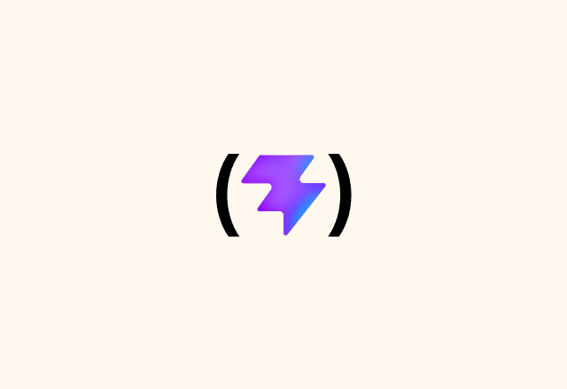
ANT-F04 · vite.svg
No utilizado · No utilizadowidth="77"; height="47"
No utilizado. React/Vite son marcas reconocibles, pero no se verificó autoría/licencia del archivo.src/assets/vite.svg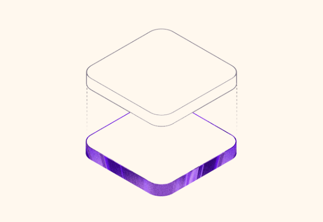
ANT-F05 · hero.png
No utilizado · No utilizado(343, 361) px archivo
No utilizado. React/Vite son marcas reconocibles, pero no se verificó autoría/licencia del archivo.src/assets/hero.png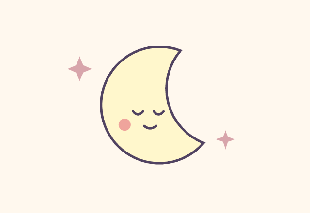
ANT-P01 · Muestra product-moon
No utilizado · No utilizadoArchivo vectorial sin dimensión raster; Sin tamaño CSS activo
Conservar solo como referencia histórica; no encargar redibujo sin reactivar uso.src/assets/placeholders/illustrations/product-samples.svg#product-moon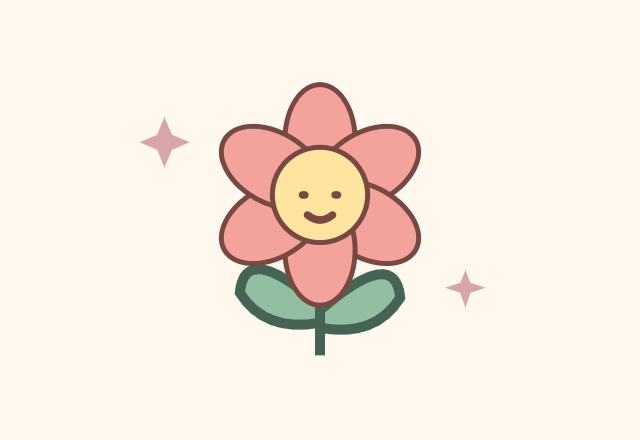
ANT-P02 · Muestra product-flower
No utilizado · No utilizadoArchivo vectorial sin dimensión raster; Sin tamaño CSS activo
Conservar solo como referencia histórica; no encargar redibujo sin reactivar uso.src/assets/placeholders/illustrations/product-samples.svg#product-flower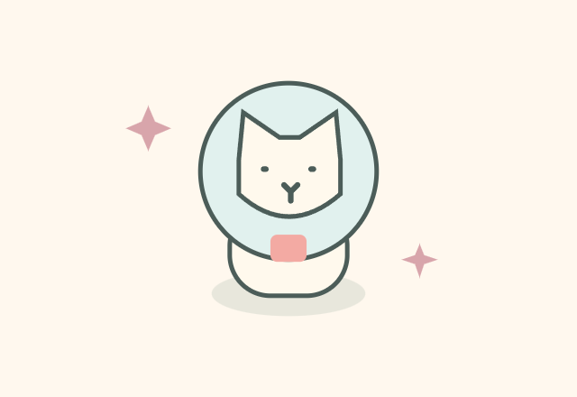
ANT-P03 · Muestra product-cat
No utilizado · No utilizadoArchivo vectorial sin dimensión raster; Sin tamaño CSS activo
Conservar solo como referencia histórica; no encargar redibujo sin reactivar uso.src/assets/placeholders/illustrations/product-samples.svg#product-cat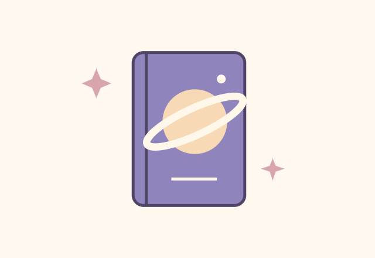
ANT-P04 · Muestra product-planet
No utilizado · No utilizadoArchivo vectorial sin dimensión raster; Sin tamaño CSS activo
Conservar solo como referencia histórica; no encargar redibujo sin reactivar uso.src/assets/placeholders/illustrations/product-samples.svg#product-planet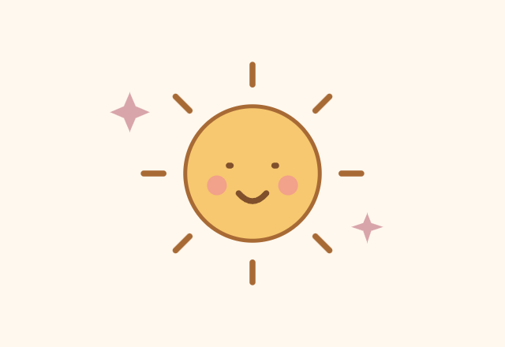
ANT-P05 · Muestra product-sun
No utilizado · No utilizadoArchivo vectorial sin dimensión raster; Sin tamaño CSS activo
Conservar solo como referencia histórica; no encargar redibujo sin reactivar uso.src/assets/placeholders/illustrations/product-samples.svg#product-sunANT-P06 · Muestra product-ghost
No utilizado · No utilizadoArchivo vectorial sin dimensión raster; Sin tamaño CSS activo
Conservar solo como referencia histórica; no encargar redibujo sin reactivar uso.src/assets/placeholders/illustrations/product-samples.svg#product-ghost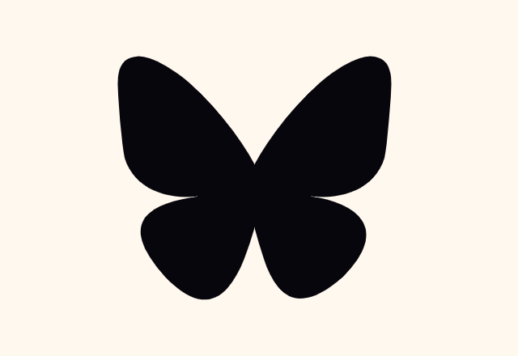
ANT-S01 · Símbolo bluesky-icon
No utilizado · No utilizadoArchivo vectorial sin dimensión raster; Sin tamaño CSS activo
Conservar solo como referencia histórica; no encargar redibujo sin reactivar uso.public/icons.svg#bluesky-icon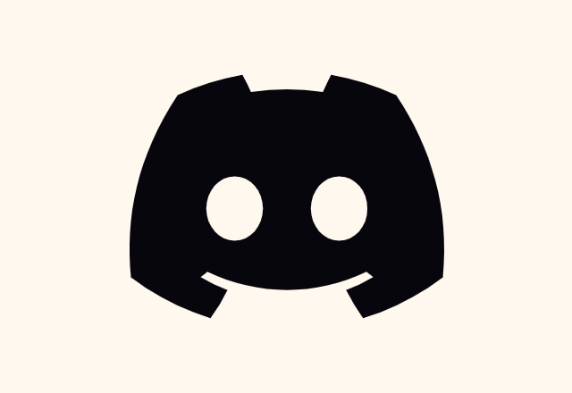
ANT-S02 · Símbolo discord-icon
No utilizado · No utilizadoArchivo vectorial sin dimensión raster; Sin tamaño CSS activo
Conservar solo como referencia histórica; no encargar redibujo sin reactivar uso.public/icons.svg#discord-icon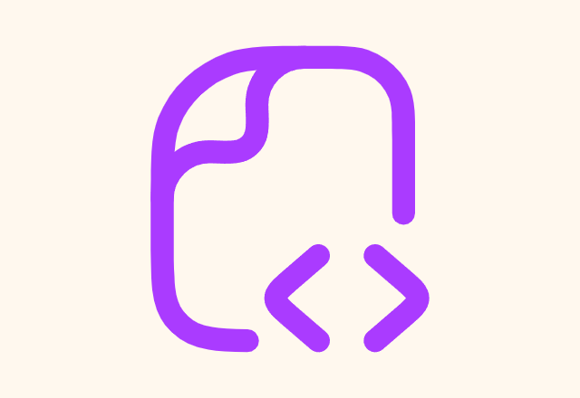
ANT-S03 · Símbolo documentation-icon
No utilizado · No utilizadoArchivo vectorial sin dimensión raster; Sin tamaño CSS activo
Conservar solo como referencia histórica; no encargar redibujo sin reactivar uso.public/icons.svg#documentation-icon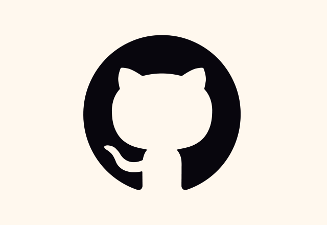
ANT-S04 · Símbolo github-icon
No utilizado · No utilizadoArchivo vectorial sin dimensión raster; Sin tamaño CSS activo
Conservar solo como referencia histórica; no encargar redibujo sin reactivar uso.public/icons.svg#github-icon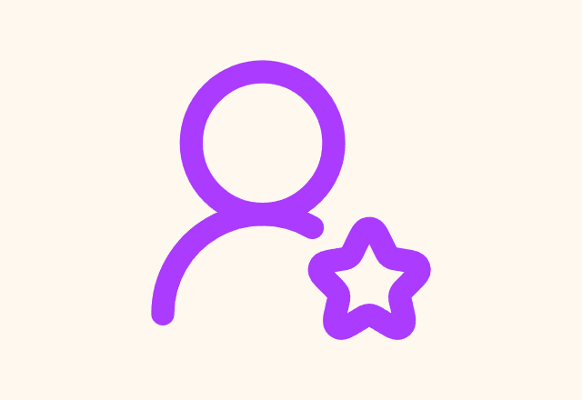
ANT-S05 · Símbolo social-icon
No utilizado · No utilizadoArchivo vectorial sin dimensión raster; Sin tamaño CSS activo
Conservar solo como referencia histórica; no encargar redibujo sin reactivar uso.public/icons.svg#social-icon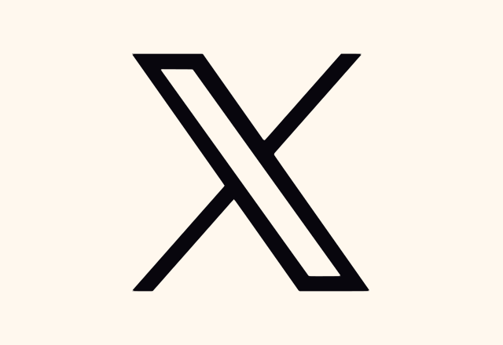
ANT-S06 · Símbolo x-icon
No utilizado · No utilizadoArchivo vectorial sin dimensión raster; Sin tamaño CSS activo
Conservar solo como referencia histórica; no encargar redibujo sin reactivar uso.public/icons.svg#x-icon